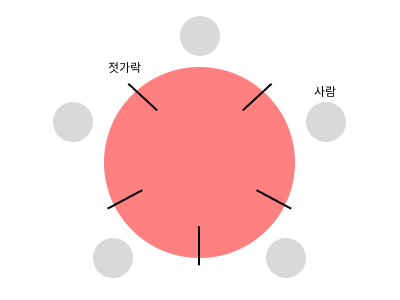

Deadlock
서로 자원을 얻지 못해서 빠진 교착상태이다.
"식사하는 철학자 문제"
철학자들이 식탁에 둘러앉아 있다.
젓가락 2개를 획득해 짝을 맞추어 식사를 할 수 있다.
먼저 본인 기준 우측에 놓인 젓가락을 든다.
그리고 좌측 젓가락을 들려 하지만 좌측의 사람이 사용하고 있어 기다리게 된다.
이때, 어느 누구도 식사를 완료할 수 없는 교착상태로 빠진다. 이를 "식사하는 철학자 문제"라고 하며 데드락(Deadlock)을 보여주는 예시이다.

발생 조건
상호 배제
자원은 한번에 한 프로세스만 사용가능하다.
점유 대기
하나의 자원을 점유하고, 다른 프로세스가 사용하는 자원을 대기하는 상태이다.
비선점
자원을 뺏어 올 수 없다.
순환 대기
순환 형태로 자원을 대기하는 상태이다.
해결책
예방
발생 조건 중 1개를 제거한다. 자원낭비가 심하다.
회피
자원 할당 전에 발생가능성을 확인하여 회피한다.
탐지
자원 할당 때마다 데드락인지 탐지한다.
회복
탐지 이후에 프로세스를 종료 or 자원을 해제 한다.